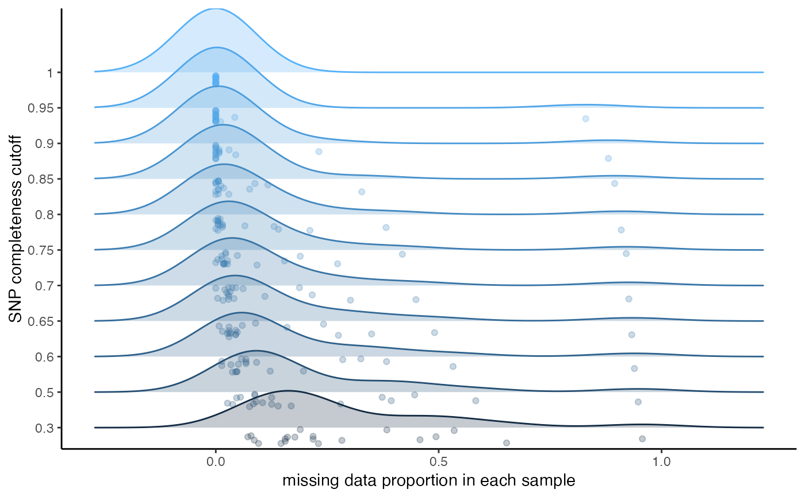

Vizualise missing data per SNP, remove SNPs above a missing data cutoff
missing_by_snp.RdThis function can be run in two ways: 1) Without 'cutoff' specified. This will vizualise the amount of missing data in each sample across a variety of potential missing data cutoffs. Additionally, it will show you dotplots visualizing the number of total SNPs retained across a variety of filtering cutoffs, and the total proportion of missing data. Based on these visualizations, you can make an informed decision on what you think might be an optimal cutoff to minimize the overall missingness of your dataset while still retaining an appropriate amount of SNPs for the downstream inferences you hope to make 2) with 'cutoff' specified. This option will show you the dotplots with the cutoff you set, and then remove SNPs above the missing data cutoff.
missing_by_snp(vcfR, cutoff = NULL)
Arguments
| vcfR | a vcfR object |
|---|---|
| cutoff | a numeric value between 0-1 specifying the maximum proportion of missing data allowed in a SNP to be retained for downstream analyses |
Value
if 'cutoff' is not specified, will return a dataframe containing the proportion missing data and the total SNPs retained across each filtering level. If 'cutoff' is specified, SNPs falling above the missing data cutoff will be removed, and the filtered vcfR object will be returned.
Examples
#> [1] "cutoff is not specified, exploratory visualizations will be generated"#>#> filt missingness snps.retained #> 1 0.30 0.28741007 417 #> 2 0.50 0.21399417 343 #> 3 0.60 0.17118644 295 #> 4 0.65 0.14907063 269 #> 5 0.70 0.12938776 245 #> 6 0.75 0.11585903 227 #> 7 0.80 0.09698492 199 #> 8 0.85 0.08011696 171 #> 9 0.90 0.06082090 134 #> 10 0.95 0.04414894 94 #> 11 1.00 0.00000000 11#> [1] "cutoff is specified, filtered vcfR object will be returned"#> [1] "41% of SNPs fell below a completeness cutoff of 0.6 and were removed from the VCF"#> ***** Object of Class vcfR ***** #> 20 samples #> 1 CHROMs #> 295 variants #> Object size: 0.5 Mb #> 17.12 percent missing data #> ***** ***** *****